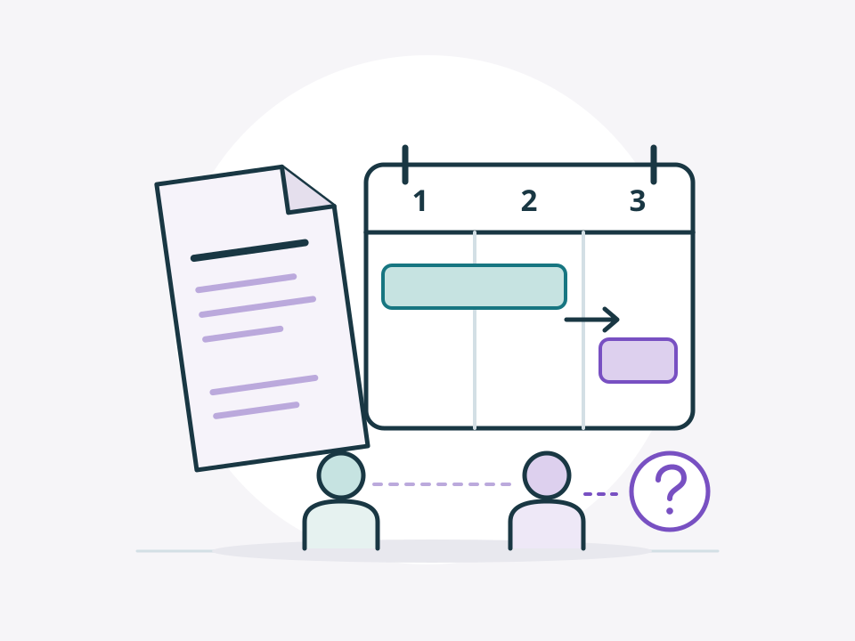

Check a Report Plan in Decision Lab
Run a three-day report plan, inspect the pending independence check, and see what changes when the deadline moves.
Read article
Topic
Deadlines, responsibilities, and conditions shape what can work. Make the limits clear before choosing.

Run a three-day report plan, inspect the pending independence check, and see what changes when the deadline moves.
Read article
Examine how choices, dependencies, evidence, and requirements fit together—and what their combination makes possible.
Read article
Examine how people, resources, interfaces, and timing fit together to achieve the intended outcome.
Read article
Work backward from a desired outcome to the conditions, evidence, responsibilities, and arrangements needed to achieve it.
Read article
Define the concepts, relationships, identities, and conditions a decision needs to preserve as its parts are combined.
Read article
We can understand the parts and still miss their connections. How can we make a larger decision easier to think about?
Read articleThe Arrangement Problem 8 of 11
A reviewer is available for an hour, yet the review still misses its deadline. What would a tool need to know to catch the conflict?
Read article
The Arrangement Problem 7 of 11
At 10:30, your reviewer’s availability changes. The deadline stays the same. Can another plan still work?
Read articleThe Arrangement Problem 5 of 11
Two plans get every report reviewed by noon. One adds a $150 fee; the other moves a customer meeting. Which tradeoff would you accept?
Read article
The Arrangement Problem 4 of 11
Three reports need review. Two reviewers are available. What would have to change for all three to finish by noon?
Read articleThe Arrangement Problem 3 of 11
Every report has someone who could review it. Can the team get them all finished on time?
Read article
The Arrangement Problem 2 of 11
The writer is assigned. The deadline is set. What still needs to be decided before the job can get done?
Read articleThe Arrangement Problem 1 of 11
Your best writer is ready to help. The report still needs an independent review by noon. Can the plan hold together?
Read article